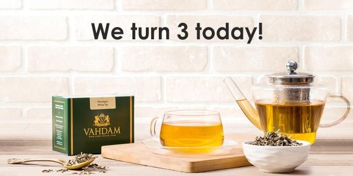

Unlike your everyday cuppa. VAHDAM teas do not travel in containers for months before being packaged and sold. All our teas are procured directly from plantations & tea growers within 24-72 hours of production, packaged garden fresh and shipped directly from source in India.
By controlling the entire supply chain and cutting out all middlemen in the otherwise long & complication supply chain of the $60 billion tea industry, we are able to make available a fresher higher quality product at a lower price to consumers, fastest.
We are also able to cut down delivery timeline from 3-9 months to less than a week. By setting up sourcing centres in India (already set-up), China & Sri Lanka, which account for 90% of the quality tea production in the world, with a global hub in Dubai/Singapore, VAHDAM endeavours to capture 5% entire world tea market in the next 7-10 years and create a vertically integrated global tea brand.